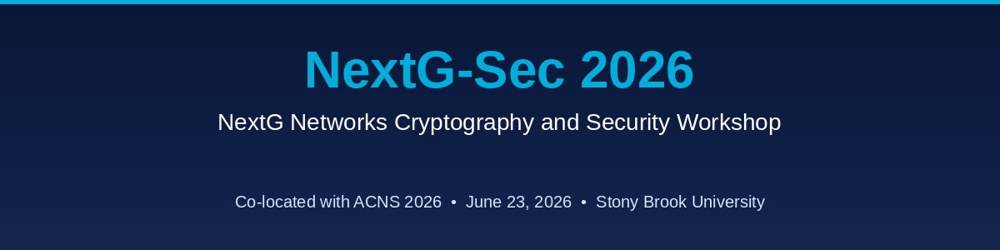

A workshop co-located with ACNS 2026
Will be held at the Wang Center, Stony Brook, NY during June 23, 2026 (in parallel with the main conference)
The workshop on NextG Networks Cryptography and Security (NextG-Sec) invites high-quality papers that address the urgent need for securing not only these networks but also the underlying cryptographic protocols and schemes used underneath. The aim for this workshop is to unite researchers, industry professionals, and government representatives to tackle these emerging security and privacy issues in next-generation networks, including 5G, 6G, and beyond.
Next-Generation wireless (NextG) network systems will support dynamically varying demands for data processing, dissemination, and storage, often in a distributed user-access-edge-core-cloud context. Given the need for ultra-reliable, low-latency performance in such high-demand applications, NextG networks face unique emerging threats, requiring innovative defense architectures, techniques, and protocols.
One of the highlights of the workshop is securing the networks from the rising threat of quantum computing and developing Post-Quantum (PQ)-secure schemes, protocols, and solutions for NextG networks.
We invite submissions of Talk Proposals for presentation at the conference. These talks are intended to highlight impactful ideas, emerging research directions, system designs, lessons learned from deployments, or thought-provoking perspectives relevant to the community.
A talk proposal should clearly present the key themes, motivations, and contributions of the proposed talk so that reviewers can evaluate its potential impact and quality. Submissions do not need to be full-length research papers; however, they should provide sufficient detail about the problem being addressed, the approach or insights offered, and why the talk would be valuable to the audience.
Talk proposals will be reviewed competitively alongside paper submissions, and accepted proposals will be selected based on relevance, originality, clarity, and expected interest to attendees.
We encourage submissions from researchers, practitioners, and industry professionals who wish to share innovative ideas, experiences, or forward-looking perspectives with the community.
The workshop is a full-day event featuring a mix of:
Accepted papers will be published in Springer's LNCS series.